SAE 3.01 – Forum de questions et d’échanges
Projet de deuxième année consistant à développer un forum complet : utilisateurs, questions, réponses, et interactions via une base de données.
Contexte du projet
La SAE 3.01 a été menée en équipe de 4 en BUT2 Informatique, sur un semestre. L’objectif était de concevoir et réaliser un forum permettant à des utilisateurs de pouvoir poser des questions et de répondre/voter à des questions avec une authentification, une partie administrateur, ainsi qu’un stockage persistant dans une base de données relationnelle (PL/SQL).
Méthodes de travail et résultats obtenus
Ce projet a été mené en suivant la méthode agile Scrum, organisée en plusieurs itérations (sprints). Au tout début du projet, nous avons définis les fonctionnalités à réaliser à partir d’un product backlog (ex: gestion des utilisateurs, système de votes, interface d’administration), puis, à chaque début de sprit, nous planifions les tâches à réaliser pendant la période.
Une première phase consisté à concevoir et faire évoluer le schéma de base de données (tables utilisateurs, questions, propositions de réponses, votes, etc.) en définissant les contraintes d’intégrité nécessaires. À chaque itération, ce modèle pouvait être ajusté en fonction des nouvelles fonctionnalités.
La partie applicative a été développée en PHP : gestion des formulaires, des sessions, connexion à la base de données, affichage des listes de questions et de réponses, système de votes, gestion des états des questions (brouillon, publiée, archivée), etc. À la fin de chaque sprint, nous testions les fonctionnalités ajoutées et faisions le point sur les améliorations à apporter pour la suite.
Le forum permet au final de créer un compte, de se connecter, de poster des questions et des réponses, de voter et de consulter l’avis des autres utilisateurs. Il propose également des fonctionnalités spécifiques pour les administrateurs.
Voici à quoi ressemble notre site web :
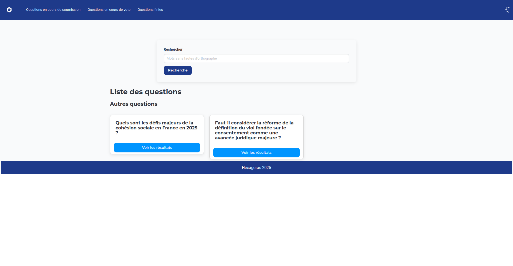 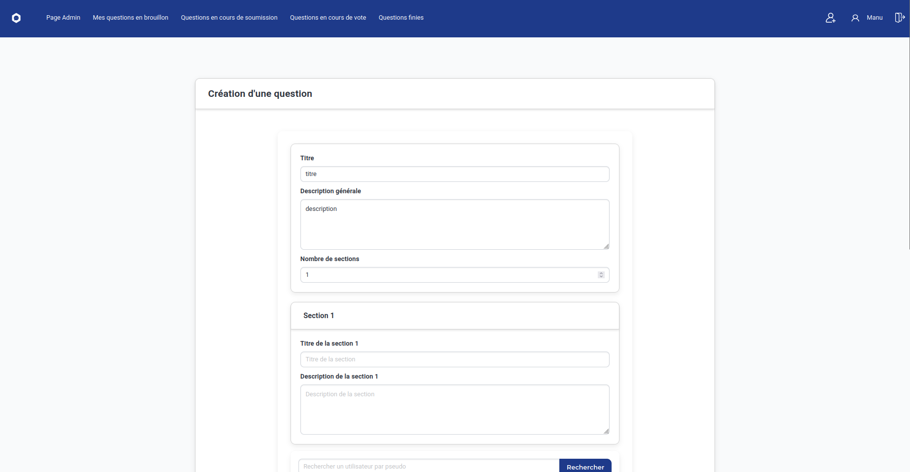
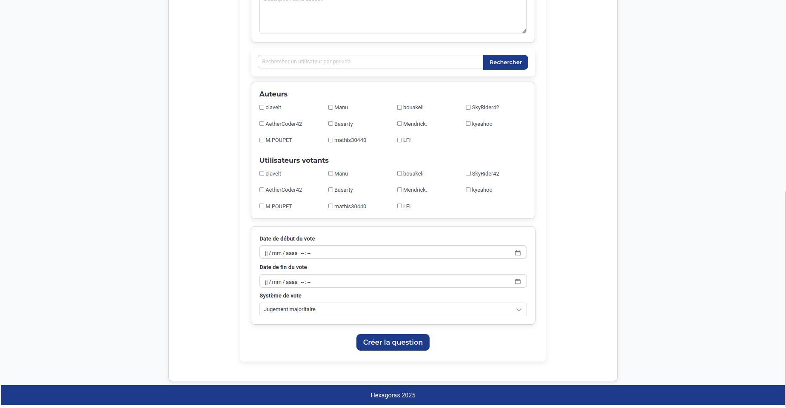
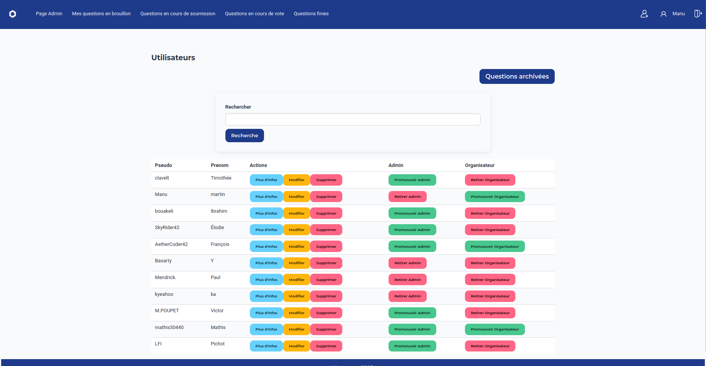
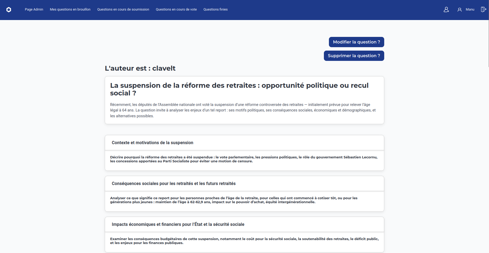
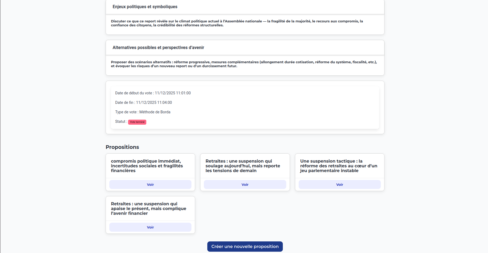
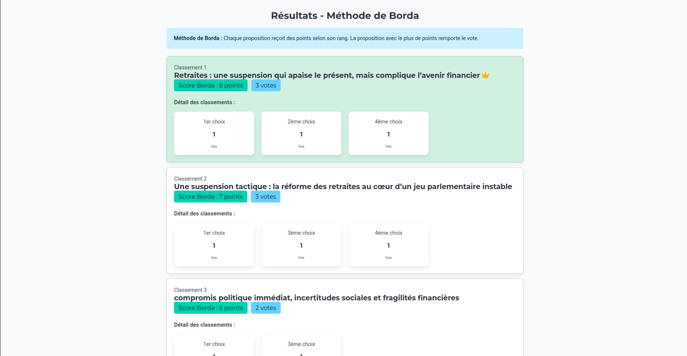
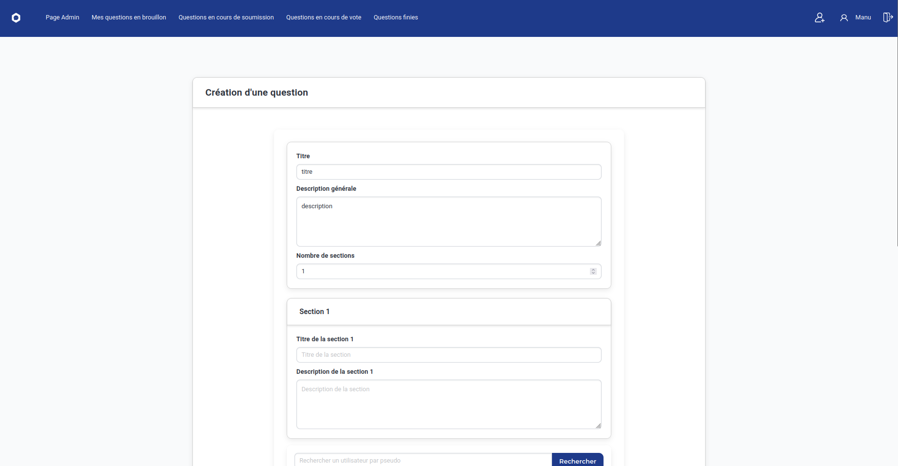
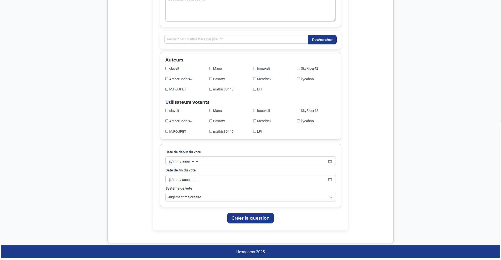
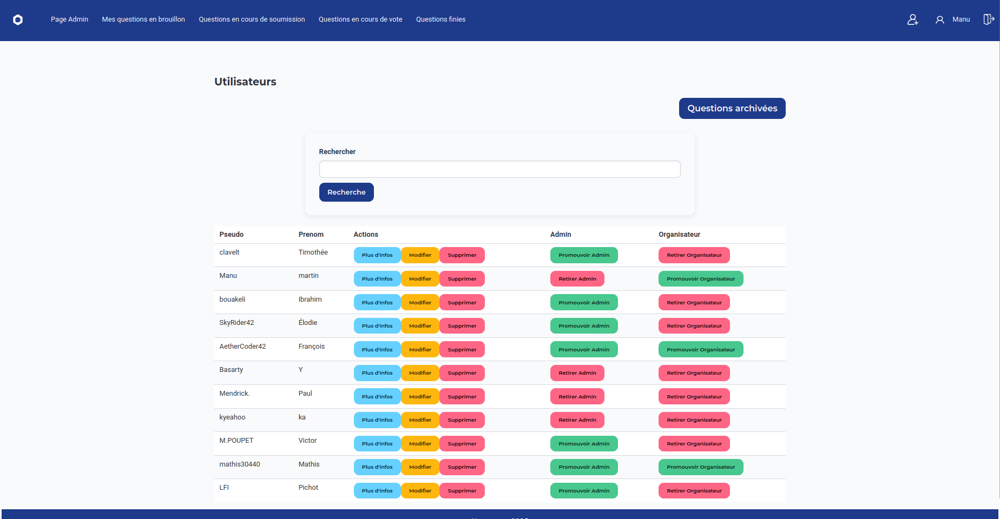
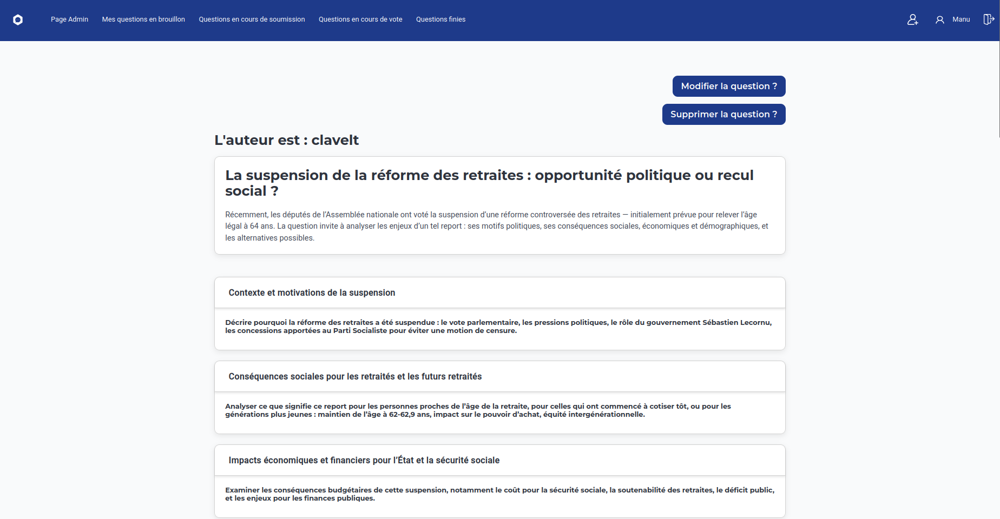
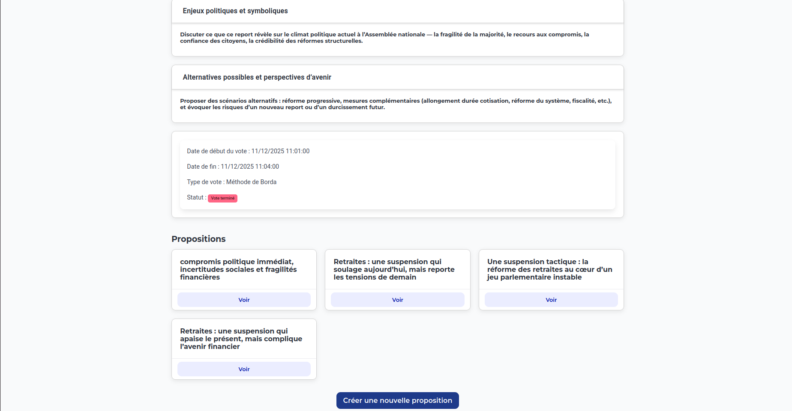
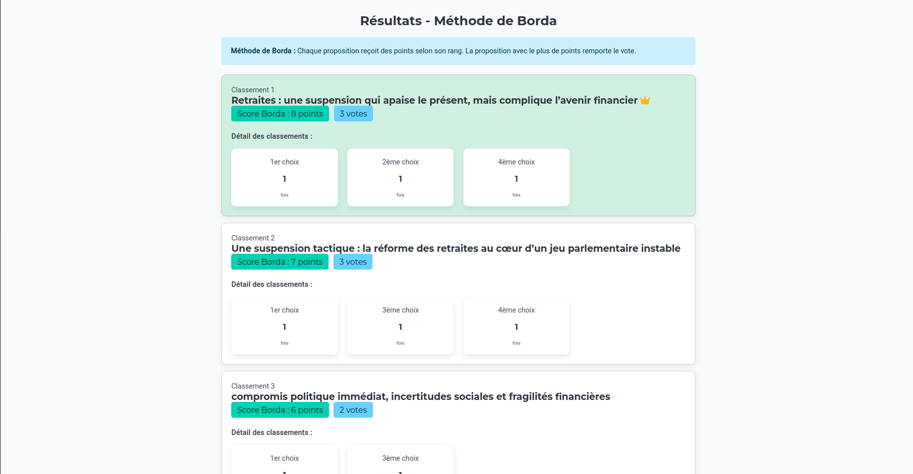
Compétences travaillées
- Conception et modélisation de base de données relationnelle.
- Écriture de requêtes SQL / PL/SQL pour manipuler les données.
- Développement back-end en PHP (sessions, formulaires, logique serveur).
- Organisation et suivi d’un projet sur la durée.
- Travail en équipe, communication autour des choix techniques.
- Application de la méthode agile (SCRUM).
Ma contribution personnelle
J’ai principalement travaillé sur la partie développement web de notre projet : mise en place de certains formulaires, ajout de système de vote, gestion de l'état des question (brouillon/poster/archiver), ajout auteurs/votants, etc. Mais aussi sur la partie base de données avec la création de certaines tables, la gestion des contraintes d'intégrité, etc.